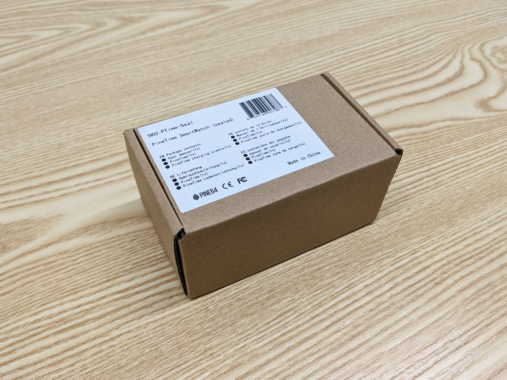
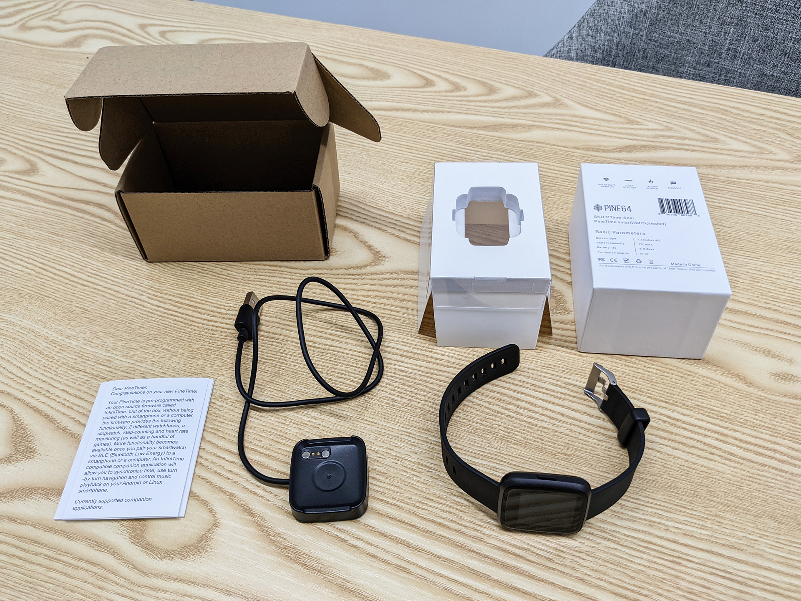
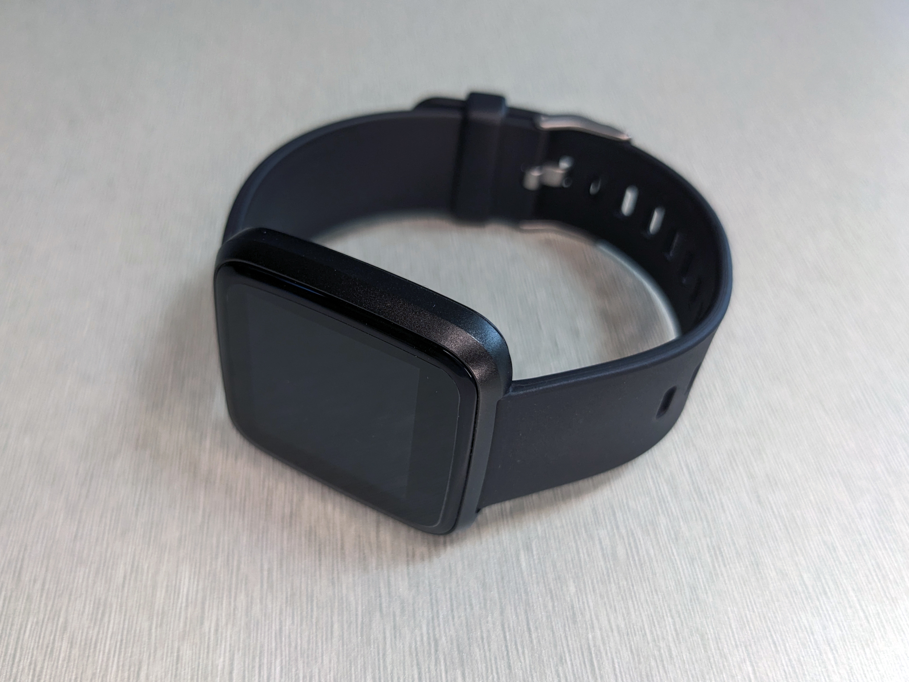
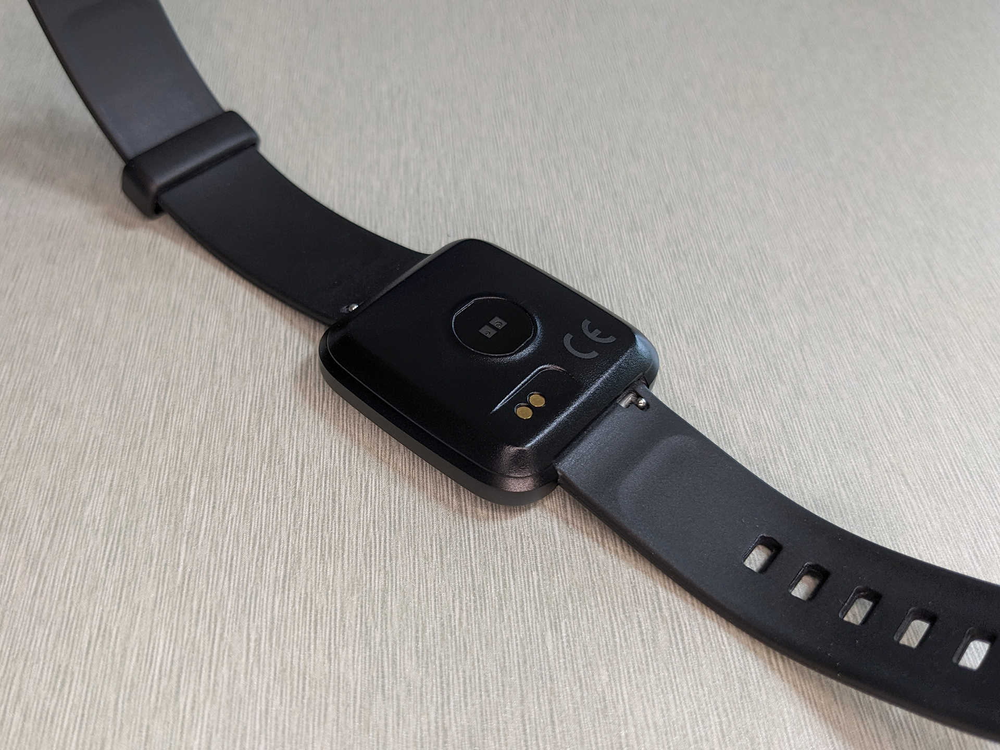
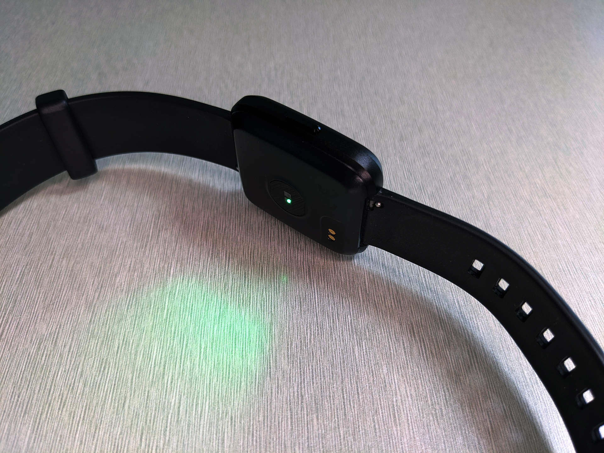
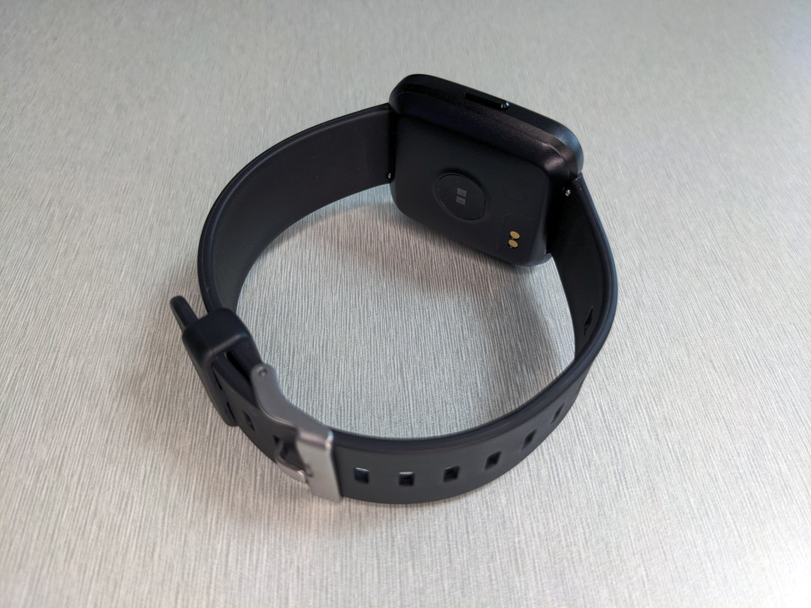
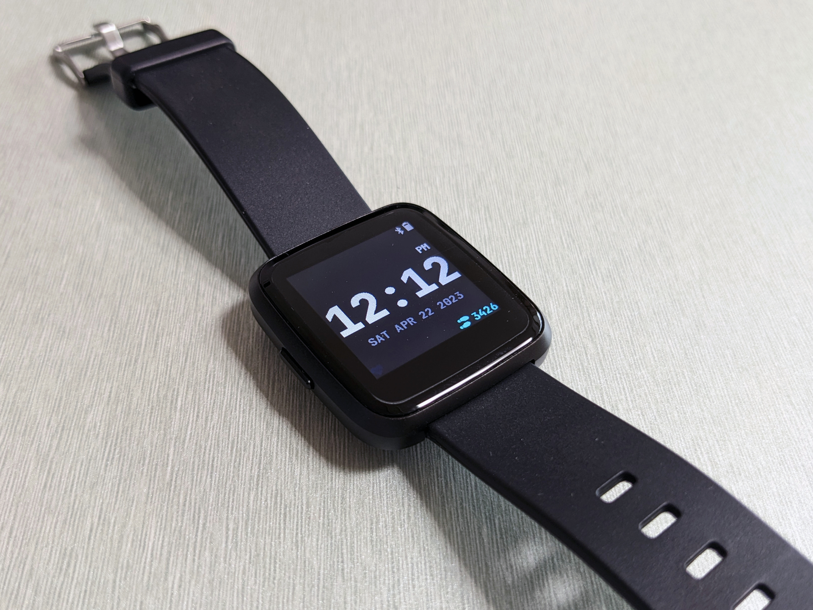
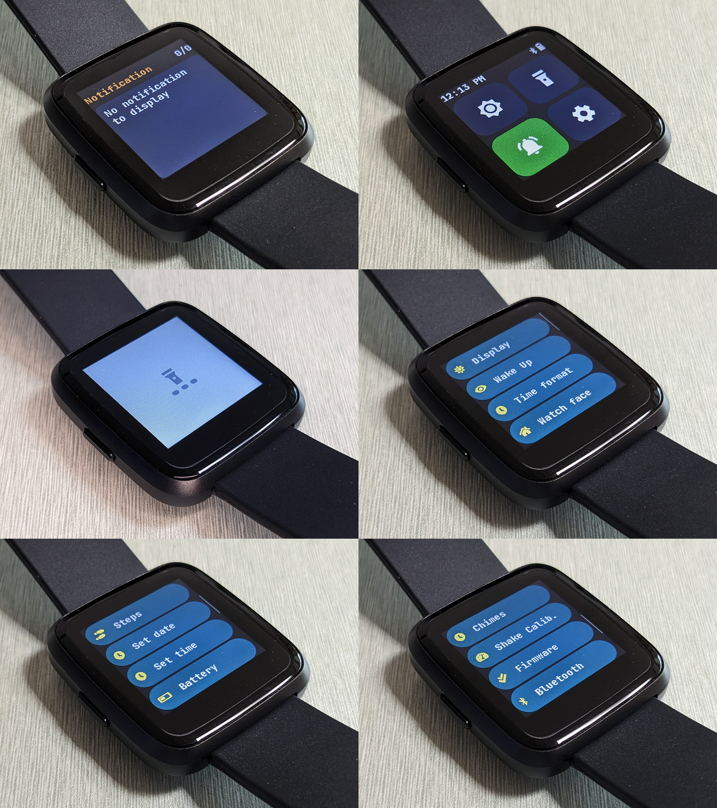
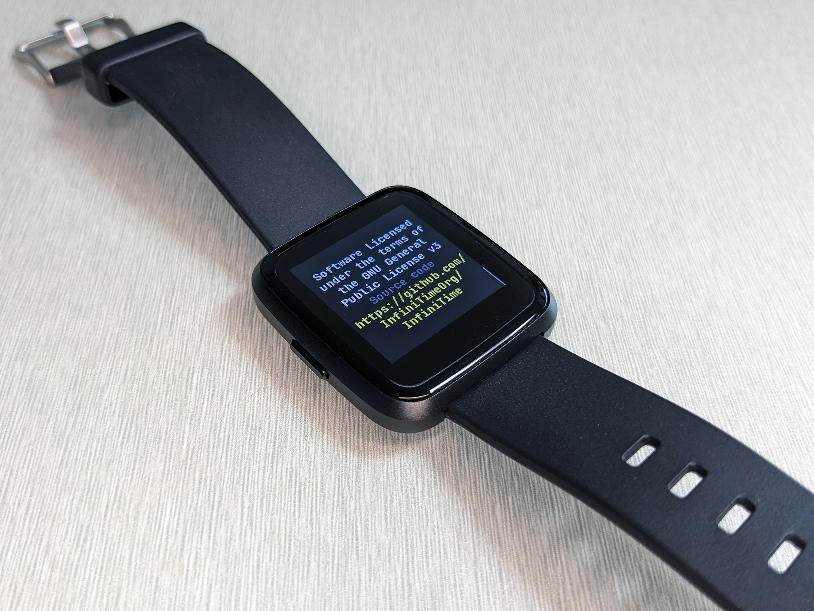

[리뷰] 오픈소스 스마트워치! PINE64 PineTime

요즘에는 전통적인 손목시계 대신에 스마트워치를 오히려 많이들 사용하는 것 같습니다. 일단은 애플이 스마트워치라는것을 '너드들이나 손목에 차고 다니는 미니 전자기기'에서 '문화적 아이콘'으로 성공적으로 포지셔닝한 덕분에 애플 워치가 가장 인기가 많을거구요, 안드로이드 진영에서도 '삼성 갤럭시 워치'라던가 '구글 픽셀 워치'같은 제품들이 경쟁을 하고 있습니다. 피트니스에 특화된 스마트밴드 '핏빗(Fitbit)' 도 있고, 여러 제조사들이 다양한 가격대와 기능의 제품들을 선보이면서 확실히 많이 보편화된 것 같습니다.
저는 오래전부터 시계를 늘 착용해왔기 때문에 스마트워치로의 전환은 아주 쉬웠습니다. 다만 개인적으로 손목에 차는 전자기기에는 '체계적인 시간 관리'라는 시계의 본질적인 기능만을 기대합니다. 셀룰러 통신, 무선 통화, 음악 감상, 신체 데이터 분석, 결제 기능같은건 그다지 필요 없더라고요. 기능이 많고 성능이 좋을수록 관리하기는 오히려 귀찮아지고 배터리 수명도 빨리 깎인다는 생각입니다. 그저 시간이나 알림과 관련된 기본적인 일정 관리 기능에 충실하면서, 쉽게 고장날 우려가 없이 튼튼하고, 배터리가 오래 가서 충전을 자주 해주지 않아도 되는 그런 '전자시계스러운' 스마트워치가 제 라이프스타일에 적합했습니다. 그래서 굳이 다양한 기능을 가진 고성능 스마트워치 대신에, '똑똑해진 카시오 전자시계'에 가까운 샤오미 미밴드 시리즈를 사용했었습니다.
그러다가 지난 2020년 언젠가, 홍콩에 본사를 둔 오픈소스 하드웨어 전문 제조사인 PINE64에서 오픈소스 스마트워치인 '파인타임(PineTime)'을 출시한다는 소식을 접했습니다. 한국에서는 거의 알려져있지 않은 전자기기 제조사인 PINE64는 '오픈소스 소프트웨어로 작동되는 하드웨어'를 개발자 커뮤니티와 함께 기획하고 생산하는 업체입니다. 쉽게 말하자면 "하드웨어는 저희가 만들어드릴테니 소프트웨어는 개발자 여러분들이 만들어서 사용하세요" 라고 할 수 있겠네요. 그래서 PINE64는 OEM 협력사들을 통한 하드웨어 조달 및 제조에만 집중하고, 소프트웨어의 경우 부트로더, 초기 펌웨어, 도큐멘테이션 정도만 마련을 해주고 나머지는 오픈소스 소프트웨어 커뮤니티에 양도하는 매우 독특한 사업 모델을 가지고 있습니다. 대중적인 소비자들을 타겟으로 최대한의 수익을 추구하는 일반적인 전자제품 기업라기보다는, 오픈소스 개발자 커뮤니티와 상생하는 메이커 문화(maker culture) 전문 샵에 가깝습니다. PINE64의 철학에는 '오픈소스'가 확고하게 자리잡고 있고, 그래서 저같은 테크 애호가들에게는 더욱 소중하다고 할 수 있습니다.
공개된 파인타임의 스펙을 보자마자 '아 이건 꼭 사야겠다' 라는 생각이 바로 들었습니다. 시간 표시, 각종 타이머/알람 기능, 스마트폰 알림 표시, 만보계, 심박수 측정 기능 정도를 지원하면서, 적당한 크기와 무게와 생김새를 가지고 있는, 제가 필요로 하던 '전자시계스러운 스마트워치' 그 자체였습니다. 무엇보다도 가장 매력적이었던건 바로 '오픈소스 소프트웨어'로 작동이 된다는 점이었습니다.
저는 전자제품이든 소프트웨어든 그 본질적인 사용권과 소유권이 제조사에 '종속'되는것을 상당히 싫어하는 소비자입니다. IT 업계의 경우 수익성 악화, 비용 절감, 인수합병/폐업을 이유로 기업이 서비스를 종료하고 제품을 단종하고 기술지원을 포기하는 일이 종종 생깁니다. 다리미나 밥솥같은 독립형 생활가전의 경우에는 제조사가 폐업을 하더라도 제품 자체는 고장날 때까지 계속 사용할 수 있습니다. 하지만 특정 소프트웨어/플랫폼/서비스에 종속된 IT 제품의 경우, 실질적 통제권이 소비자가 아닌 기업에 있죠. 스마트워치를 예로 들면, 기업이 폐업을 하게 되거나 서비스를 종료하게 되면, 연동을 위한 컴패니언 앱의 지원도 중단되고, 그러면 그 스마트워치는 조만간 고철덩어리가 되어버립니다. "제품 사양은 성능향상을 위해 사전 예고 없이 변경될 수 있습니다" 라는 조항 뒤에 숨어서 오히려 기능과 성능이 열화되는 경우도 있고, 고의적으로 모호하게 작성된 개인정보 보호정책을 무기로 사용자의 개인정보를 수익화하고 매각하는 일도 벌어집니다.
대표적인 사례가 바로 스마트워치 초창기에 기본기로 호평을 받았던 페블 테크놀로지의 페블(Pebble)과 아마존의 헤일로(Halo) 제품군입니다. 페블 테크놀로지와 아마존 두 기업 모두 해당 제품군을 단종시키고 기술 지원을 끊었습니다. 하지만 여기에는 가장 큰 차이점이 있는데요, 바로 페블의 경우에는 개발자 커뮤니티가 오픈소스 펌웨어와 컴패니언 앱을 만들어준 덕분에 제품을 계속해서 사용할 수 있게 되었다는 점이고, 헤일로의 경우에는 아마존이 전액 환불을 제공하면서 제품을 회수하고 폐기처분 했다는 사실입니다. 전자제품이 얼마나 오픈소스 및 개발 커뮤니티에 친화적이냐에 따라서 소비자 입장에서는 제품의 사용권과 소유권까지 영향을 받게되는 것이죠.
저는 당시로써는 구형 제품인 '샤오미 미밴드 3'를 사용했었는데 그 이유도 바로 샤오미에서 만든 공식 컴패니언 앱인 Mi Fit을 사용하는 대신 오픈소스 소프트웨어를 사용할 수 있었던 마지막 샤오미 웨어러블 제품이었기 때문입니다. 미밴드 3과 어메이즈핏 빕(Amazfit Bip) 제품을 마지막으로, 이후 샤오미는 공식 Mi Fit 앱을 통해서만 가능한, 서버 기반의 온라인 페어링을 강제하기 시작했습니다. 저는 건강상태, 신체정보, 일상 활동과 관련된 중요한 개인정보를 일개 사기업인 샤오미와 공유할 생각이 없고, 그걸 감수할만큼 저런 제품들이 그다지 유용하거나 필요하지도 않아서 결국 미밴드 3은 처분해버렸습니다. 샤오미가 아니라 다른 기업의 제품이었더라도 마찬가지입니다.
소비자의 권리와 프라이버시라는 측면에서도 파인타임은 제가 원하던 제품이었던겁니다. 다만 위에서 언급한 PINE64 제품들의 특성상 초기 펌웨어의 품질이 그다지 좋지는 않았고, 초기 사용자들의 리뷰를 보니 펌웨어 개발 실습 용도가 아닌 실사용 목적으로는 여러가지로 불편함이 있었기 때문에 곧바로 구매하지는 않고 개발 현황만 꾸준히 지켜보고 있었습니다. 이후 여러 헌신적인 개발자 및 기여자 분들이 노력해주신 덕분에 최근에는 상당한 수준의 품질 향상이 있었고 실사용도 가능한 수준이 되어서, 작년 하반기에 마침내 구매를 결심하고 주문을 넣었습니다. 제품 가격은 USD 26.99달러고 여기에 한국까지 직배송을 해주는 준등기 국제우편 요금 11.99달러 (DHL 쾌속 등기 국제택배는 30달러) 가 추가됩니다. 굉장히 합리적이고 저렴한 가격입니다. 준등기 국제우편 배송은 해외에서 한국까지 오는 과정만 추적되고 그 이후 국내 배송 과정은 추적되지 않는 일반 우편으로 오게 되는데 도착하기까지 약 2~3주 정도가 소요되었습니다. PINE64는 전세계 글로벌 판매 및 배송을 지원하기 때문에 주문 결제 관련해서 별다른 문제가 전혀 없었습니다. 한국 카드와 국내 배송지 모두 잘 적용됩니다.
패키지 & 구성품

파인타임 박스는 이렇게 생겼습니다. 허세 따위는 갖다버리고 실용주의를 자랑하는 패키지입니다. 누가 보면 공업용 부품을 주문한 줄 알겠네요.

박스를 열면 이런 모습입니다. 그나마 내부 포장은 나름대로 '소비자 기기'스럽게 해놨습니다. 흰색 박스의 바닥에는 심플하게 제품의 주요 스펙을 인쇄해놨고, 흰색 박스에 수납되어 있는 투명 플라스틱 케이싱과 스펀지 속에 파인타임 본체가 안전하게 들어있습니다. 박스 안에는 간략한 파인타임 설명서와 함께 USB Type-A 유선 충전기가 동봉되어 있습니다. 충전기와 파인타임에는 작은 자석이 각각 내장되어 있어서 충전기의 금속 pogo pin이 파인타임의 금속 접점에 닿도록 방향을 맞춰서 갖다대면 내장된 자석들이 서로 찰싹 달라붙으며 결합됩니다.
외관

파인타임은 이렇게 생겼습니다. 전면에는 강화유리 터치스크린 패널이 접합된 1.3인치 크기의 IPS LCD 디스플레이가 있고, 그 주위를 아연 합금 재질의 금속 프레임이 둘러싸고 있습니다. 저렴한 가격임에도 불구하고 실제로 만져보면 마감이 상당히 견고하고 좋습니다. 파인타임은 이미 기존에 시장에 출시된 타사의 스마트워치 제품과 동일한 하우징과 폼팩터를 사용한다는 언급이 PINE64의 블로그와 소셜 미디어 어딘가에 있었는데, 실제로 파인타임의 외관은 Fitbit Versa 제품과 상당히 유사합니다. 아마 PINE64가 동일한 OEM 제조사에 맡긴게 아닐까 하고 사용자들은 추정하고 있습니다.
백라이트 밝기는 저전력 LCD 디스플레이의 특성상 직사광선 아래에서는 잘 보이지 않지만 그 외의 환경에서는 화면이 밝게 잘 보입니다. 해상도는 240x240 픽셀로써 스마트워치 용도로는 충분합니다. 디스플레이에 보호필름을 부착해놨기 때문에 사진상으로 보기에는 투과율이 떨어지고 난반사가 있지만, 실제로는 선명합니다.


파인타임의 후면에는 레이저를 사용하는 광학식 심박수 측정 센서와 함께 배터리 충전용 접점이 있습니다. 파인타임의 후면 하우징에는 아연 합금 대신 플라스틱 재질을 사용했는데, 원가 절감 목적도 있겠지만 플라스틱은 열전도율이 낮아 겨울철에 착용할 때 피부의 불편감이 덜하다는 장점도 있습니다. 파인타임은 20mm 규격의 스트랩을 지원합니다. 별도의 도구 없이 스프링 바를 잡아당겨 쉽게 탈착이 가능한 quick release 방식입니다. 그래서 시중에 판매중인 다양한 서드파티 스트랩을 사용할 수 있다는 장점이 있습니다. 기본으로 제공되는 번들 스트랩은 검은색의 부드러운 실리콘 재질이며 핀 버클 방식으로 길이를 조절하고 고정합니다. 처음에는 살짝 구겨져있고 뻣뻣하지만 사용하다보면 부드러워지면서 착용감이 꽤나 편안합니다.

파인타임의 왼쪽 측면에는 유일한 물리 버튼이 있는데 길게 누르면 전원을 켜고 끌 수 있고, 짧게 누르면 이전 화면으로 돌아가는 기능을 수행합니다. 파인타임은 IP67 등급의 생활방수를 지원하기 때문에 일반적인 사용환경에선 버튼을 통해 기기 내부로 물이 스며들지는 않습니다. PINE64에서는 방수 접착 공정을 통해 하우징을 완전히 밀폐시킨 소비자용 파인타임과 함께, 메인보드에 있는 UART, I2C, SPI 등의 접점에 직접 연결해 펌웨어 플래싱과 디버깅을 자유롭게 할 수 있도록 하우징이 분해되어 있는 '개발자 전용 버전(dev kit)'도 같은 가격에 판매하고 있습니다.
펌웨어

파인타임에는 대표적으로 두 종류의 펌웨어를 사용할 수 있습니다. PINE64에서 공식적으로 지원하고 파인타임에도 기본적으로 탑재되어 있는 C++ 기반의 InfiniTime과, 임베디드 지향 MicroPython 기반의 Wasp-OS가 있습니다.
InfiniTime은 하드웨어에 가까운 C++ 기반으로 작성되어서 배터리 효율이 좋습니다. 기본적인 시계 기능에다가 간간이 알림을 받는 용도로는 단일 충전으로 최대 7일 정도 사용할 수 있습니다. PINE64 공식 펌웨어인데다가 개발도 활발해서 요즘은 상당히 안정적으로 작동합니다. 반면 메모리를 직접 관리해야 하는 C++ 언어 기반이기 때문에, 메인보드에 직접 접속해서 펌웨어 리셋이 가능한 dev kit을 구매한게 아니라면 펌웨어를 개조하는게 상당히 위험하기도 합니다. 스마트워치에서 segfault라도 터진다면 끔찍하겠죠. 그나마 컴퓨터에서 InfiniTime 코드를 가상으로 실행해볼 수 있는 시뮬레이터인 InfiniSim이 개발되어있어서 다행입니다.
Wasp-OS는 파인타임에 사용된 SoC인 Nordic Semiconductor nRF52832를 위한 Adafruit NRF52 기반 부트로더 위에다가 MicroPython을 올려서 실행하는 방식입니다. 파이썬 기반이기 때문에 임베디드나 메모리 제어 관련 지식이 부족해도 앱을 개발하거나 개조하기가 훨씬 수월합니다. 하지만 파이썬이라는 언어는 인터프리터를 거쳐서 구동되다보니 배터리 효율은 비교적 낮습니다. 한번 충전하면 3일 정도 사용한다고 하네요.
저는 개발 연습이 아닌 실사용 목적으로 구매를 했기 때문에 안정적이고 배터리가 오래 가는 InfiniTime을 사용합니다. C++를 다뤄본지도 꽤 오래 되었고 임베디드 분야는 문외한이라서 걱정이 되지만 언제 한번 InfiniSim을 열심히 굴려가며 기존 펌웨어를 개조해서 커스텀 워치페이스를 만들어보고자 합니다. 소스코드를 보니 상당히 직관적으로 깔끔하게 작성이 되어 있고, 도큐멘테이션도 충분해서 워치페이스 만드는 것 정도는 한번 도전해볼만 하다는 생각이 듭니다.
메뉴와 기능

InfiniTime은 상/하/좌/우 스와이프 제스쳐 기반의 UI/UX를 가지고 있습니다.
시간이 표시되는 메인 화면을 아래로 밀면 위쪽에서 최근 5개의 스마트폰 알림이 표시됩니다. 안타깝게도 한중일 언어(CJK) 폰트의 비교적 큰 용량과 파인타임의 제한적인 가용 메모리 등의 어려움으로 인해 아직 한글은 지원되지 않습니다. 다만 파인타임을 스마트폰과 연동하기 위해 사용하는 일부 컴패니언 앱에서는 한글을 로마자로 전자(transliteration)해주는 기능이 있습니다. "안녕"이라는 메세지를 "annyong"으로 표기해주는 방식이죠. 안드로이드 스마트폰에서의 대표적인 오픈소스 스마트워치 컴패니언 앱으로는 Gadgetbridge가 있는데, 가젯브릿지는 이러한 한글→로마자 변환을 지원합니다. 저는 어차피 스마트워치에 큰 역할을 기대하지는 않고 그저 알림 내용만 간략하게 확인하면 충분하기 때문에 로마자로 표기되는 알림이 딱히 불편하지는 않았습니다.
메인 화면을 오른쪽으로 밀면 왼쪽에서 빠른 설정 메뉴가 나타납니다. 화면 밝기를 3단계로 조절할 수 있는 버튼, 진동 알림을 켜고 끌 수 있는 버튼, 손전등 기능 버튼, 그리고 상세 설정 버튼이 있습니다. 손전등 기능 버튼을 누르면 화면 전체가 최대 밝기로 하얗게 변합니다. 손전등이라는 이름이 민망한 수준이지만, 그래도 암흑 속에서 비상시에 가까운 물체를 밝힐 수는 있습니다.
상세 설정 메뉴에서는 다음과 같은 작업을 할 수 있습니다.
- 화면 켜짐 시간 설정 (5~30초)
- 화면 켜는 방법 설정 (화면 두드리기, 두번 두드리기, 손목 들기, 손목 흔들기)
- 시간 형식 설정 (12시간/24시간)
- 워치페이스 설정 (기본 4개)
- 만보계 목표 걸음 수 설정
- 시간/날짜 수동 설정
- 배터리 상태 확인
- 정각 알림 설정 (정각마다/30분마다/끄기)
- 손목 흔들어서 화면 켜기 민감도 설정
- 펌웨어 정보 확인 및 롤백 (펌웨어의 안정성을 검증하기 전까지 이전 버전의 펌웨어로 롤백 가능)
- 블루투스 켜고 끄기 (블루투스를 끄고 일반 전자시계처럼 사용 가능)

메인 화면을 위쪽으로 밀면 앱 메뉴가 나타납니다.
- 스톱워치
- 알람 시계
- 카운트다운 타이머
- 만보계 걸음 수 확인
- 심박수 측정
- 스마트폰 미디어 제어 (이전/다음/재생/일시정지/볼륨조절)
- 흑백 간이 그림판
- 고전 게임 Pong
- 퍼즐 게임 2048
- 메트로놈
- 내비게이션 구간(turn-by-turn) 안내 (특정 컴패니언 앱 및 내비게이션 앱에서만 지원)
저는 주로 스톱워치, 진동 알람, 카운트다운 타이머, 스마트폰 음악 재생 컨트롤 기능 정도만 사용합니다.
최고의 기능?!

스마트워치에서 GPL 라이센스 안내문을 볼 수 있다니 감격스럽읍니다...
이것은 '가지고 놀 자유'를 추구하는 공대생을 위한 장난감,
이쯤 되면 이해하시겠지만, 파인타임은 평범한 사람들이 좋아할만한 스마트워치는 절대 아닙니다. 고성능의 최신 기기를 탐닉하는 일반적인 IT기기 애호가들을 위한 스마트워치도 아닙니다. 스마트워치라기엔 기능들이 빈약합니다. UI/UX가 세련되지도 않습니다. 모든게 투박합니다.
파인타임의 작지만 위대한 특장점은 바로 '기기의 가능한 모든 것을 개방하고, 또 그것을 제한없이 다룰 수 있는 자유' 입니다. 내 마음대로 펌웨어를 뜯어고치고, 필요한 기능을 추가하고, 심지어 파인타임과 연동해서 사용할 스마트폰 앱 조차도 내가 직접 만들 수 있는 엔지니어링의 자유입니다.
아니면 덜 똑똑하지만 프라이버시는 끝내주게 지켜주는 스마트워치
소프트웨어 내부 구조를 내가 직접 확인할 수 있다는 자유는 또한 기기를 사용하면서 입력하고 출력하는 모든 데이터를 내가 직접 소유할 수 있다는 강력한 프라이버시도 제공합니다. 내가 몇시에 일어나서 몇시에 잠드는지, 하루에 몇 걸음을 걷는지, 누구와 언제 어떤 대화와 통화를 주고받는지, 평상시에 심박수가 정상 범위인지, 이런 중요한 개인정보들이 나도 모르게 수집되고 악용되지 않을까 걱정할 필요가 없다는건 큰 장점입니다.
디지털 생활의 사소한 편의 기능들과 일상적 개인정보마저도 상업적 서비스들에 의해 과도하게 잠식되는 세상에서 이런 자유는 흔치 않고 그래서 소중합니다. 때로는 불편하고 어렵고 손이 많이 가더라도, 제가 가급적이면 자유 오픈소스 소프트웨어/하드웨어를 선호하는 이유입니다.
개발자나 엔지니어 뿐만 아니라, 저처럼 권리와 자유를 중요시하는 일반 소비자들을 위해서도 특별한 대안을 마련해주고 있는 PINE64를 응원합니다.
나중에 여유가 생기면 PINE64의 대화면 e-ink 전자책인 PineNote도 구매하고자 합니다.